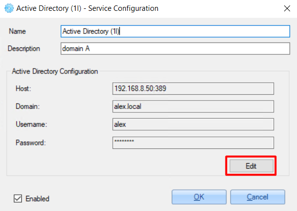
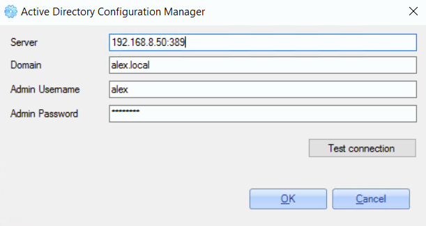
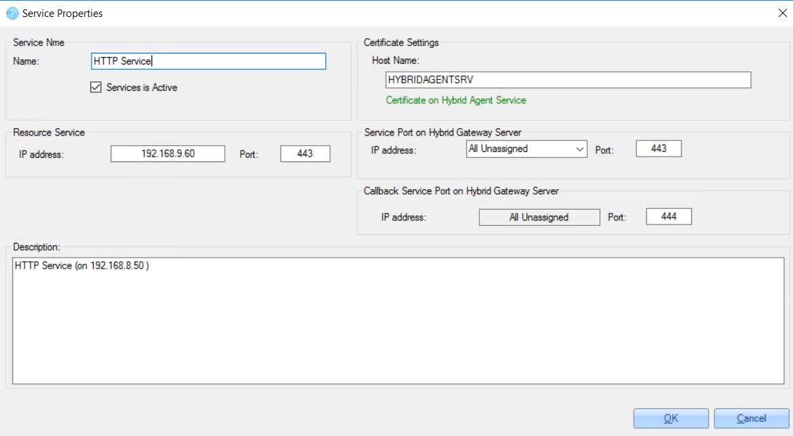
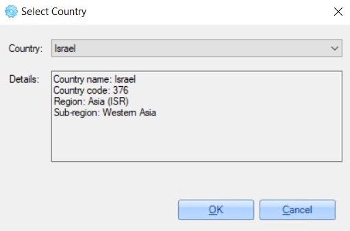
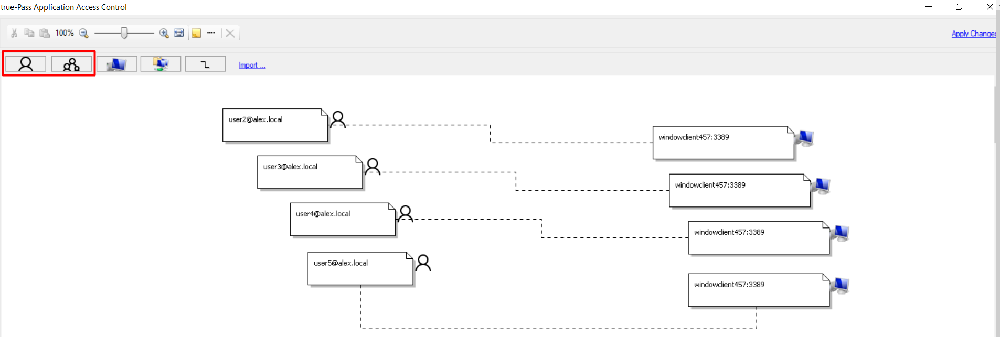
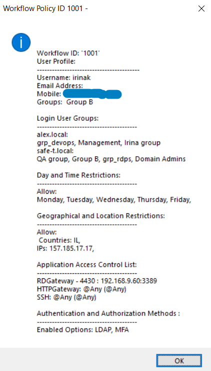
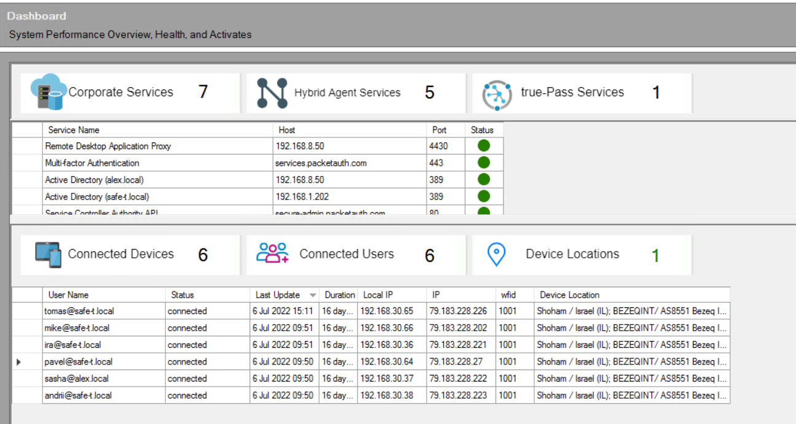

1. Getting Started
1.1 Installation
To install ZoneZero true-Pass Admin Management Console, do the following:
1. Run 'ZoneZero Hybrid Agent Service' MSI.
2. Click the 'Next' button in the installation window.
3. Check the ‘I accept the terms in the License Agreement' checkbox and click the 'Next’ button.
4. Select the 'Typical' installation type.
5. Select the 'Typical' installation type.
1.2 Check Certificates
To check certificates, do the following:
1. Click the 'Tools' tab in the toolbar.
2. Click the 'Certificate Configuration Manager' button.
On the opened windows, certificates information is displayed.
For example:
2. Admin Management Console Configurations
2.1 Configure Services
To make the system work, you need to configure the following services:
- Active Directory
- Service Controller
- Client Endpoint
2.1.1 Configure Active Directory
To configure Active Directory, do the following:
1. Open the 'Services Configuration' window.
2. Double-click the 'Active Directory' service.
3. Click the 'Edit’ button in the opened window.
4. In the opened window, set Active Directory configurations:
- server IP and port
- domain
- username (user with administrator permissions)
- password
Example of the configuration:
To check if the configuration is correct, click the 'Test connection' button.
In case of a successful connection, a pop-up with the relevant information appears:
Click the 'OK' button to save changes.
2.1.2 Configure Service Controller
To configure the Service Controller, do the following:
- Open the 'Services Configuration' window.
- Double-click the 'Service Controller Authority API' service.
3. Set the 'Service URL' value - ZoneZero true-Pass Admin URL in the following format:
https://[customer's subdomain]-admin.packetauth.com:3003/api/login (for
example: https://secure-admin.packetauth.com:3003/api/login).
4. Click the 'OK' button to save the configuration.
Example of the configuration:
2.1.3 Configure Client Endpoint
To configure the Service Controller, do the following:
- Open the ‘Services Configuration’ window.
- Double-click the 'Client Endpoint Configuration' service.
3. Set the 'IPSec URL' value - ZoneZero true-Pass Client URL in the following format:
https://[customer's subdomain].packetauth.com:4434. Set 'Virtual Network Route' value (unique for every environment value).
5. Set the ‘Remote Desktop Gateway Host Name’ value - ZoneZero truePass Service URL in the following format:
[customer's subdomain]-services.packetauth.com:4430After clicking the ‘Edit' button near the value, the 'Ping Host’ pop-up appears where you can ping the provided address:
6. Click the 'OK' button to save the configuration.
Example of the configuration:
2.1.4 Configure Syslog [optional]
To configure Syslog, do the following:
1. Open the ‘Services Configuration’ window.
2. Double-click the 'Syslog settings' service.
3. Check the 'Enabled’ checkbox in the opened window.
4. In the opened window, set Syslog configurations:
Click the 'OK' button to save changes.
2.1.5 Configure MFA [optional]
To configure MFA, do the following:
1. Open the ‘Services Configuration’ window.
2. Double-click the 'Multi-factor Authentication (MFA) service.
3. Fill in all required fields.
4. Click the 'Edit' button to test the connection.
5. On the opened window, enter your mobile number and click the 'Test' button for testing sending an MFA request.
6. Click the 'OK' button to save changes.
2.1.6 Configure TOTP [optional]
To configure TOTP, do the following:
1. Open the ‘Services Configuration’ window.
2. Double-click the 'TOTP' service.
3. Click the 'Edit' button.
4. On the opened window, generate the ‘Secret Key’ value and use it for configuring TOTP Authenticator (like Google Authenticator etc.).
5. Click the 'OK' button to save changes.
2.2 Configure Network Rules
To configure network rules, do the following:
1. Open the 'Network Rules' window.
2. Double click the existing rule.
3. Fill in the following information:
[customer's subdomain]-admin.packetauth.com:808] (for example: secure-admin.packetauth.com:808) [customer's subdomain]-admin.packetauth.com] (for example: secure-admin.packetauth.com) 888Example of the configuration:
4. Configure required services - for example, ‘Remote Desktop Application Proxy', 'HTTP Service' or 'SSH Service’.
Example of 'Remote Desktop Application Proxy' configuration:
Example of 'HTTP Service' configuration:
5. Click 'OK' to save changes.
Enabling the service:
After updating service properties, the 'pending network policies and configuration deployments' warning appears:
To deploy changes, do the following:
1. Click the 'System' tab in the toolbar.
2. Click the 'Deploy Configurations' button.
3. Confirm deployment.
After successful deployment, you can go to the 'Dashboard' and see the successfull status of the services running:
2.3 Configure Security Policies
2.3.1 Add a Policy
Policies allow configuring access to applications and services.
To add a new policy, do the following:
1. Click the 'Create New Workflow Policy' link:
2. Confirm the action in the confirmation pop-up:
3. On the ‘Network Access Policy' window, specify authentication and authorization methods for the policy - check relevant checkboxes and click the 'OK' button.
4. On the 'Constraints and Conditions' window, select required Constraints and Conditions and click the ‘Select' button
There are 2 options for ‘Constraints and Conditions’ - ‘User Groups’ and ‘Day and Time Restrictions’.
5. On the next 'Constraints and Conditions' window, select the service for this policy and click the 'Select' button.
6. Configure just selected service and click the 'OK' button.
7. In the opened ‘Workflow Policy Configuration' window, re-check entered values and click the 'OK’button.
2.3.2 Workflow Policy Configuration
To update workflow policy configuration, on the ‘Security Policies' window double-click the required policy or right-click the policy and select the 'Edit Workflow Policy' option.
2.3.2.1.1 Authentication and Authorization Methods
To specify authentication and authorization methods for the policy, open the policy and click the 'Edit' button:
For fast updating the Authentication and Authorization Methods, right-click the policy and select the 'Edit Authentication and Authorization Methods' option:
In the opened window you can change Authentication and Authorization Methods.
The following authentication and authorization methods can be enabled:
2.3.2.1.2 Constraints and Conditions
To add/edit constraints and conditions for the policy, open the policy and click the 'Add' button:
There are 3 options for‘Constraints and Conditions’.
2.3.2.1.2.1 User Groups Restrictions
Here you can configure user groups that will be used while authentication (together with enabled authentication and authorization methods). To do this, do the following:
1. On the opened ‘Constraints And Conditions' window, select the 'User Groups’ option.
2. On the opened window, check that the relevant domain is selected from the dropdown list and click the 'Add from Active Directory' link.
3. Select the groups that will be used for login via this policy.
4. Save changes.
2.3.2.1.2.2 Day and Time Restrictions [optional]
Here you can configure the time access policy that will be applied while user authentication. To do this, do the following:
1. On the opened ‘Constraints And Conditions' window, select the 'Day and Time Restrictions’ option.
2. On the opened window, set one of the following options:
3. Check checkboxes near the days that you need to configure for the access time policy and set specific time restrictions.
For example:
4. Also, you can set an expiration date - users will not have access after the specified date. To set this, check the 'Disallow access after selected time and date expires' and specify the date.
5. Click the 'OK' button to save changes.
2.3.2.1.2.3 Geographical and Location Restrictions [optional]
Here you can configure the users' location restrictions that will be applied while user authentication. To do this, do the following:
On the opened ‘Constraints And Conditions' window, select the 'Geographical and Location Restrictions’ option.
2. On the opened window, set one of the following options:
3. Check checkboxes near the parameters that you need to configure for the access policy - countries, cities, IP addresses.
For example:
4. Click the 'Edit' button next to the checked option to set parameters.
5. On the opened pop-up, click the 'Add' button.
6. For the 'Country' option need to select the country from the list, for other options - add the required parameter value manually.
For example:
7. Click the 'OK' button to save changes.
Example of configurations:
'Custom Attributes' option can set restrictions by any of the following options - country, city, IP address or ISP.
For example:
2.3.2.2 Application And Services
To add an application for accessing via this policy, do the following:
Click the 'Add' button.

2. Select an application from the opened list and click the 'Select' button.
3. Add service configuration (if the selected service supports it) and click the 'OK' button.
2.3.2.2.2 Configure Application
To update added service configurations, do the following:
1. Select any of the added applications.
Click the 'Edit' button.
For example:
In the opened window, the following information can be configured:
Examples of services configurations:
1. Access for domain admins from different domains with disabled MFA, disabled access expiration date and disabled drivers and clipboard redirection:
2. Access for specific users with enabled MFA, enabled access expiration date and enabled drivers and clipboard redirection:
2.3.2.2.3 Configure Application Access Control
To configure application access control (specific user access to specific stations), do the following:
1. Select any of the added applications.
2. Double-click it or click the 'Edit Application Access Control list' link.
For example:
3. In the opened window, click the ‘Add User' or 'Add Group’ button to add a relevant user or user group:
Or click the 'Import' button to import domain user and group:
4. Click the 'Add Computer' button to add the relevant RDP station.
5. Add the required IP address or hostname and port 3389 in the appeared user block.

6. Click the 'Add Relationship' button to link the user and station.
7. Click the user and the computer to create a link between them.

8. Click the 'Apply Changes' link to save changes.
9. Close the window.
After successfull adding a user, it appears in the 'Access Control List'.
For example:
2.3.2.2.4 Generate RDP file
To generate an RDP file for user access, do the following:
1. Select the relevant user in the 'Access Control List' section.
2. Click the 'Generate RDP File' button.
3. On the opened ‘true-Pass RDP File Generator’ window, the RDP file data is shown and it can be saved using the ‘Generate RDP file’ button.
In this window there are also 2 additional options that can be enabled:
Example of Access List for the user:
2.3.2.3 Configurations
'Configurations' tab contains the list of services used for true-Pass authentication and authorization (Active Directory, MFA etc.).
Every service configuration can be updated by clicking the 'Edit' button.
For example:
2.3.2.4 Run Workflow Policy Validation
'Run Workflow Policy Validation' option can be used for testing access for the specific user.
To check access for a user, do the following:
1. Click the 'Run Workflow Policy Validation' link.
2. Enter username in UPN format.
For example:
In the opened window, the following information about the user is shown:
For example:
2.3.3 Access Control List for Workflow Policy (Users & Groups List)
After clicking the policy on the 'Security Policies' window, users and groups from the Access Control list appear in the bottom part of the window:
The menu displayed by right-clicking the user/group from the list provides the following options:
Edit Applications Access and Permissions - opens selected service properties window for editing:
3. Dashboard
On the Dashboard the following information can be seen:
For example:
Detailed information about the connected user can be opened by double-clicking the required user row.
For example:
Selected user can be dropped by clicking the ‘Drop User' button on the 'Device Summary Report for user’ window.
For example:
4. Reports
Reports provide information about user activities.
For example:
5. End User Flow
5.1 SSTP Use Case
For starting working, the end user should receive IPSec Desktop Client and RDP file for accessing relevant RDP services.
1. Run received IPSec Desktop Client.
2. Click the 'Connect' button:
3. Enter the user’s credentials in the opened pop-up.
For example:
4. After entering the correct credentials, ‘Connection Status', ‘Service Status’ and the 'Application Access Status’ will be marked as successful, and a list of the available services will be present:
After successful connecting, the user can run received RDP files to access relevant RDP services.
5.2 RDP (not SSTP) Use Case
For starting working, the end user should receive an RDP file for accessing relevant RDP services.
Also, for this case need to set the following to the 'hosts' file (its location:
[IP address of the ZoneZero true-Pass Admin Console] [customer's subdomain]-services.packetauth.comFor example: 10.10.10.26 lab-secure-services.packetauth.com
After that, a user can run the received RDP file and get access to the relevant stations.
Changelog
Aug 04, 2022
- Release v1.0.1
- Initial release